COURSE OVERVIEW ｜ 旗艦培訓課程
講義對照 P.01 ｜ 錄音 00:00~02:00
以發電物理特性與台電法規規範為基底，建立專業光伏維運巡檢防禦體系
📌 本章要解決的問題／核心論點
打破「光電維運純粹是擦板打掃」的傳統誤解，從底層半導體能隙、電位差排列、電網諧波抗干擾到高壓工安死角，建立百萬度電廠之專業防禦體系。
- 跨維度工程解耦：將 SCADA 發電損失拆解為日照強度（扣減電流）與散熱不良（扣減電壓），杜絕經驗主義誤判。
- 工安死角防禦：直擊組串負極對地 -199V 高壓、MC4 異廠混接熔毀、鳥糞誘發背板 100°C 龜裂等隱蔽起火點。
- 台電法規攻防：依台電函稿第 1088051755 號處置高電壓截斷，嚴守單相 20kVA 與三相容量差 5kVA 併網紅線。
維運不是被動清潔工，而是掌握半導體物理特性、電氣安全法規與電網調度特性的資產防禦工程師。
培訓基本資訊與受眾定位
進金生能源 6692
培訓認證與時間
太陽光電設置乙級技術士專業回訓課程
時間：2026年10月27日 ｜ 講師：葉大衛 (David Yeh)
培訓對象
維運工程師／案場主任
配套講義
33 頁、66 張投影片

原廠講義：P.01 課程大綱目錄
ACMEPOINT 6692 ✕ 乙級技術士回訓
頁碼：01 / 20
按 N 鍵呼出講稿 ｜ ← / → 換頁 ｜ F 全螢幕 ｜ G 總覽
ARCHITECTURE ｜ 知識體系地圖
講義對照 P.01-02 ｜ 錄音 00:00~04:00
光伏維運工程五大核心模組骨架：貫穿物理發電、案場巡檢與電網防禦
📌 本章要解決的問題／核心論點
維運決策如何避免「頭痛醫頭、腳痛醫腳」？透過五層式物理與法規防禦鏈，建立可標準化落地的工程標準作業程序 (SOP)。
- 物理層（模組一）：釐清半導體能隙跳躍、半切晶片集電密度與日照/溫度非線性發電解耦。
- 運維層（模組二+四）：以 30% 照度鉗表修正值判定清洗，嚴守 1A 備品匹配、20kg 扭力與負極帶電防觸電規範。
- 電網與安全層（模組三+五）：台電三相相差 5kVA 平衡配算、變壓器 TAP 調降發函、RSD 消防 80V 快速斷電機制。
五大模組環環相扣：發電靠物理特性最大化，運維靠工藝杜絕火災，併網靠台規保住電費。
五大工程模組結構流向圖
進金生能源 6692
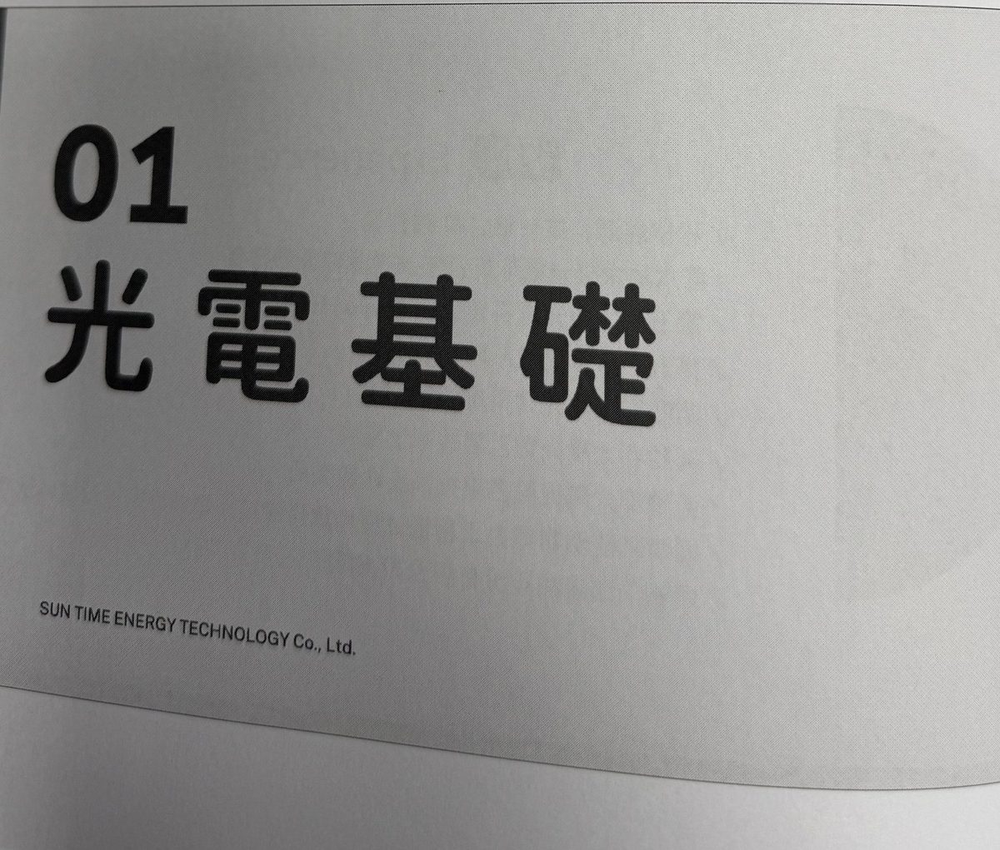
原廠講義：P.02 單元一 光電基礎
ACMEPOINT 6692 ✕ 乙級技術士回訓
頁碼：02 / 20
按 N 鍵呼出講稿 ｜ ← / → 換頁 ｜ F 全螢幕 ｜ G 總覽
MODULE 1 ｜ 光電基礎與能量轉換
講義對照 P.03-04 ｜ 錄音 00:00~02:27
能量轉換本質：光能轉熱能 vs 光能轉電能之熱力學辨析
📌 本章要解決的問題／核心論點
工程師如何精準區分三大終端產品（太陽能小片、熱水器、聚光模組）之轉換機制？為何台電電網必須採用交流電？
- 熱水器是光轉熱（密度循環）：夏天日光充足將水煮至 100°C 人體無法沐浴，冬天日照貧瘠時反而依賴市電電熱棒加熱，本質上是非零碳的高耗電終端。
- 太陽光電是光轉電（光電效應）：矽晶片吸收可見光波段 (1.1~1.4eV 能隙)，電子躍遷形成電位差引導至負載，是電網唯一非旋轉機械的直流主動電源。
- 交流電網利於『並量』：渦輪發電機均為交流輸出，台電電網採用交流的主因是易於透過電磁感應變壓與多電源直接並網，直流電並量難度與成本極高。
熱水器存熱、光電產電；太陽能是主動發電核心，變流器則是被動轉換媒介。
能量轉換路徑與併網拓撲對照
進金生能源 6692
🔥 太陽能熱水器 (光轉熱)
太陽光輻射 ➔ 集熱板吸收 ➔ 水體密度差自然循環 ➔ 熱能儲存 (冬季需市電補償)
⚡ 太陽光電 PV (光轉電)
可見光照射 ➔ 矽晶電子躍遷 ➔ PN接面電位差 ➔ DC 直流輸出 ➔ 逆變器轉 AC 併網
核心元件定位對比：
• 太陽能模組：主動元件 (Active Device)，依光照產生電位差。
• 變流器 (Inverter)：被動轉換元件 (Passive Conversion)，選配需配合模組電性能。
• 變流器 (Inverter)：被動轉換元件 (Passive Conversion)，選配需配合模組電性能。
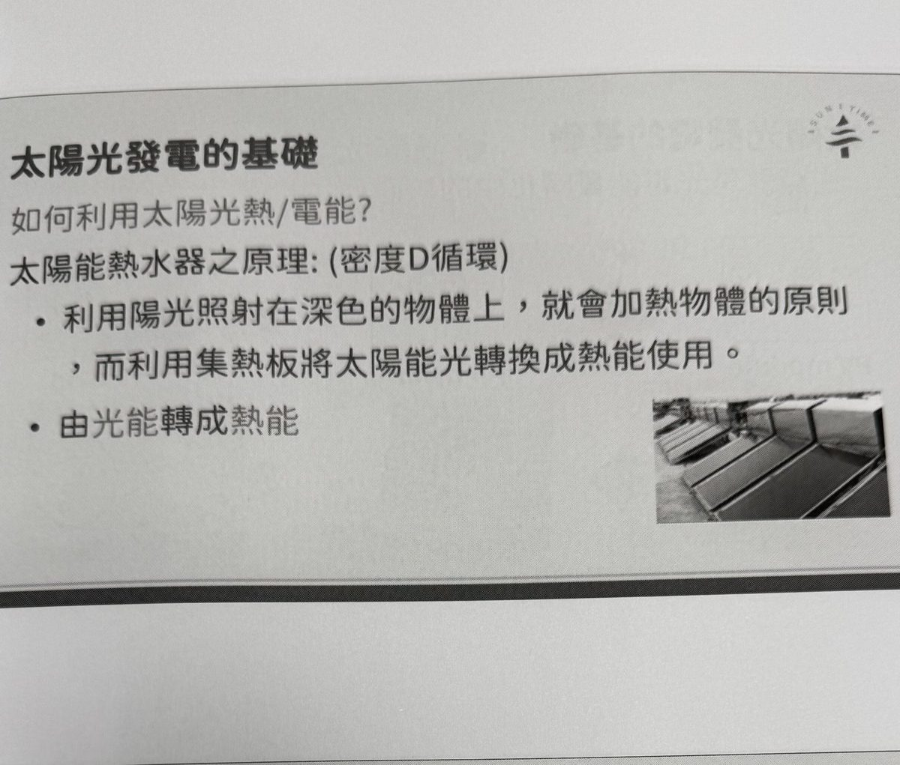
原廠講義：P.03 光熱 vs 光電原理
ACMEPOINT 6692 ✕ 乙級技術士回訓
頁碼：03 / 20
按 N 鍵呼出講稿 ｜ ← / → 換頁 ｜ F 全螢幕 ｜ G 總覽
MODULE 1 ｜ 電池片架構演進
講義對照 P.04-05 ｜ 錄音 04:04~07:57
電池片架構演進：全片 20% 效率極限到半切低阻抗之工程突破
📌 本章要解決的問題／核心論點
為何市面上已全面淘汰早期 6 吋全片模組？半切技術（Half-cut Cell）如何從焊接工藝與電氣迴路上突破 20% 封裝極限？
- 全片封裝遭遇 20% 效率瓶頸：早期主流 6 吋全片（邊長約 15cm），倒邊倒角接近正方形；長邊 Ribbon 匯流帶手工或機器焊接時，常因均勻受熱不足發生燒穿與空焊虛焊。
- 半切技術使熱損耗降為 1/4：將晶片切為兩半後，單片工作電流 $I$ 減半；依據焦耳定律 $P_{\text{loss}} = I^2 R$，內部集電電阻熱損耗直接暴跌至原本的 $25\%$。
- 上下分流迴路抵抗局部遮陰：全片為單一長串聯，遮蔽單片整組旁路跳脫；半切模組採用上下對稱並聯，下半部遮陰時上半部仍能獨立維持 $50\%$ 以上出力。
半切技術以「電流減半、熱損折四分之三」解耦了焊接燒穿與遮陰癱瘓雙重難題。
全片 vs 半切電池片電氣迴路對比
進金生能源 6692
❌ 早期全片 (Full-Cell 60/72 Cells)
• 15cm 長邊焊接易燒穿虛焊
• 單串回路：遮蔽一片 ➔ 整串電流被拉扯降載
• 轉換效率瓶頸緊繃於 20%
• 單串回路：遮蔽一片 ➔ 整串電流被拉扯降載
• 轉換效率瓶頸緊繃於 20%
✔ 現代半切 (Half-Cut 120/144 Cells)
• 主柵線 Ribbon 密度提升，焊接熱應力大幅降低
• 電流減半 ➔ 內部電阻損耗 $P = (I/2)^2 R = P/4$
• 上下對稱分流：底部遮陰上半部獨立持續發電
• 電流減半 ➔ 內部電阻損耗 $P = (I/2)^2 R = P/4$
• 上下對稱分流：底部遮陰上半部獨立持續發電
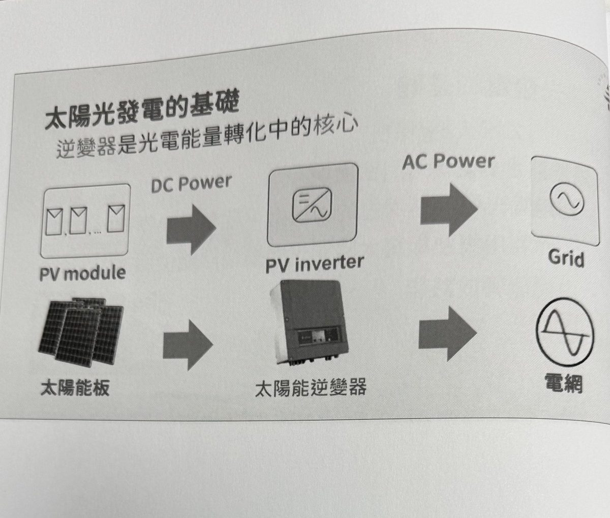
原廠講義：P.04 晶片結構與逆變器
ACMEPOINT 6692 ✕ 乙級技術士回訓
頁碼：04 / 20
按 N 鍵呼出講稿 ｜ ← / → 換頁 ｜ F 全螢幕 ｜ G 總覽
MODULE 1 ｜ 發電物理模型解耦
講義對照 P.05, 07 ｜ 錄音 07:57~10:34
發電特性解耦：日照定電流、通風定電壓之物理數學模型
📌 本章要解決的問題／核心論點
SCADA 系統發電功率驟降時，工程師如何從電流 $I$ 與電壓 $V$ 的曲線變化，精準鎖定是「表面髒污」還是「通風散熱不良」？
- 電壓在弱光下即飽和（由溫度決定）：受光照度達 300~400 W/m² 以上時，晶片電位差已排列完整；後續電壓隨工作溫度每升高 1°C 產生約 -0.3%~-0.4% 的負溫度係數衰退。
- 電流與日照強度呈絕對正比：日照照度從 100、300 到 1000 W/m²，光生電流 $I_{sc}$ 與日照呈嚴格線性正比關係；表面積塵鳥糞直接阻擋光子，直接扣減電流。
- 散熱不良的隱形發電損失：學校風雨球場下方因氣流封閉，發電效率常態性比開闊案場低 5%~10%；鐵皮平鋪距離小於 15cm 時散熱死區使工作電壓大幅滑落。
工程診斷鐵律：髒污遮蔽看『電流』，通風溫升查『電壓』，$P = V \times I$ 方能精準定位根因。
IV 曲線日照與溫度敏感度矩陣
進金生能源 6692
| 物理參數 | 日照照度 (Irradiance) | 工作溫度 (Cell Temp) | 現場典型案例 |
|---|---|---|---|
| 開路/工作電壓 $V_{mp}$ | >350 W/m² 即飽和穩定 | 負相關 (每升1°C 掉0.35%) | 風雨球場無風散熱差，電壓損耗 5~10% |
| 短路/工作電流 $I_{mp}$ | 絕對正比 (線性上升) | 微幅正相關 (幾可忽略) | 案場落塵鳥糞遮陰，電流直接跌落 15~30% |
💡 結論導向：為追求模組 21% vs 21.5% 效率差糾結，不如改善案場通風間距（保持 >15cm）並及時清洗，後者挽回的發電量高達 15% 以上。
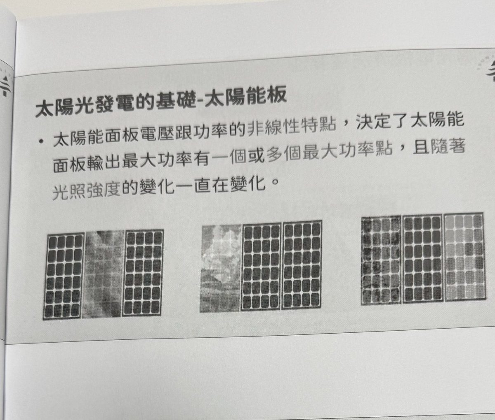
原廠講義：P.07 電壓過高 vs 遮陰曲線
ACMEPOINT 6692 ✕ 乙級技術士回訓
頁碼：05 / 20
按 N 鍵呼出講稿 ｜ ← / → 換頁 ｜ F 全螢幕 ｜ G 總覽
MODULE 2 ｜ 案場清洗與備品策略
講義對照 P.06 ｜ 錄音 10:34~13:32
模組選型與備品鐵律：1%~2% 專屬備品與電流 1A 嚴格匹配
📌 本章要解決的問題／核心論點
案場破裂一片模組時，為何不能隨意調購同功率新品更換？如何避免大電流加熱小電流產生熱斑？
- 模組 5 年停產淘汰鐵律：光電模組產品迭代約 5 年，舊型號停產後原廠絕不重開產線，市面將完全斷料（如同 iPhone 7 無原廠料件維修）。
- EPC 建置期必留 1%~2% 備品：建設案場時必須採購 1%~2% 同批次同規格模組存放於現場倉庫，是防範 20 年維運斷料的唯一保險。
- 串聯更換電流差嚴控 ≤ 1A：串聯電路電流處處相等。若替換模組電流偏大，其電位優勢將小電流模組反向加熱；若替換模組電流偏小，整串組串電流將被全面扯低。
更換模組絕不看電壓尺寸，『電流差 1A 決定生死』，無專屬備品將面臨串聯熱失效。
串聯回路電流不匹配效應模型
進金生能源 6692
【串聯匹配仿真案例】原組串設計電流 $I_1 = 10\text{ A}$
情境 A：換入小電流模組 ($I_2 = 8\text{ A}$，差 2A)
➔ 串聯木桶效應：整串電流被強行限制在 8A！整串 20 片模組損失 20% 出力。
➔ 串聯木桶效應：整串電流被強行限制在 8A！整串 20 片模組損失 20% 出力。
情境 B：換入超大電流模組 ($I_2 = 13\text{ A}$，差 3A)
➔ 大電流模組無法發揮，且多餘電能轉為熱能加熱鄰近模組，引發局部熱點。
➔ 大電流模組無法發揮，且多餘電能轉為熱能加熱鄰近模組，引發局部熱點。
⚠️ 工程規範：更換模組必須比對規格銘牌上的 $I_{mp}$（最大功率點電流），最佳容許差值限制在 ±1.0A 以內。
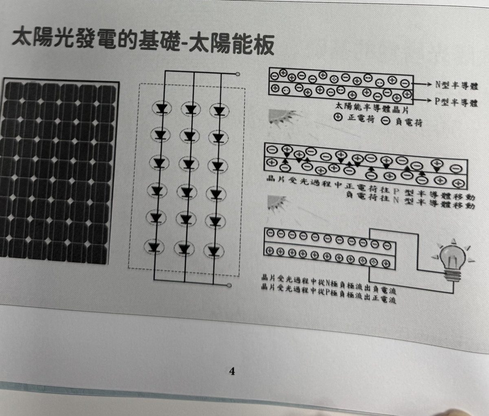
原廠講義：P.06 台電公文與電壓處理
ACMEPOINT 6692 ✕ 乙級技術士回訓
頁碼：06 / 20
按 N 鍵呼出講稿 ｜ ← / → 換頁 ｜ F 全螢幕 ｜ G 總覽
MODULE 2 ｜ 案場清洗科學決策
講義對照 P.08-09 ｜ 錄音 13:32~16:16
案場清洗科學決策：共平面照度鉗表修正法 vs 30% 損益門檻
📌 本章要解決的問題／核心論點
何時該派工清洗電廠？為何不能單看過去 1 個月或前幾天的歷史 PR 值？清洗機器人震動對半切晶片有何影響？
- 歷史 PR 值的致命統計誤差：前幾天 PR 值受雲層遮蔽與季節角度干擾極大，無法真實反映面板髒污程度，盲目派工易導致清洗收益抵不過工資。
- 共平面照度計 + 鉗形電流表標準法：在面板平面放置標準照度計，以直流鉗表勾測組串電流；透過公式 $I_{\text{STC}} = I_{\text{實測}} \times (1000 / G)$ 修正，衰退達 30% 觸發清洗。
- 機器人低頻震動與隱裂權衡：自走式清洗機低頻震動雖可能加劇半切電池微裂，但強風環境下晶片本即受震；權衡發電增益後，大型電站仍應維持定期清洗。
以共平面實測修正取代歷史 PR 幻覺；當效率衰退 30% 且發電收益覆蓋成本時果斷出工。
共平面照度鉗表修正 SOP 與損益決策
進金生能源 6692
【標準量測三步驟】
① 共平面照度：照度計緊貼模組玻璃平面，測得當下照度 $G$ (W/m²)
② 直流鉗表勾測：同步量測該組串正極輸出電流 $I_{\text{實測}}$ (A)
③ 修正至 STC：計算 $I_{\text{修正}} = I_{\text{實測}} \times (1000 / G)$，與原廠 $I_{mp}$ 比對
① 共平面照度：照度計緊貼模組玻璃平面，測得當下照度 $G$ (W/m²)
② 直流鉗表勾測：同步量測該組串正極輸出電流 $I_{\text{實測}}$ (A)
③ 修正至 STC：計算 $I_{\text{修正}} = I_{\text{實測}} \times (1000 / G)$，與原廠 $I_{mp}$ 比對
小型案場 (<100kW)
清洗工資佔比高，若僅掉 15~20%，靜待自然降雨更具成本效益。
清洗工資佔比高，若僅掉 15~20%，靜待自然降雨更具成本效益。
大型地面/水面案場
容量大邊際收益高，衰退達 25~30% 立即啟用自走機或水車清洗。
容量大邊際收益高，衰退達 25~30% 立即啟用自走機或水車清洗。
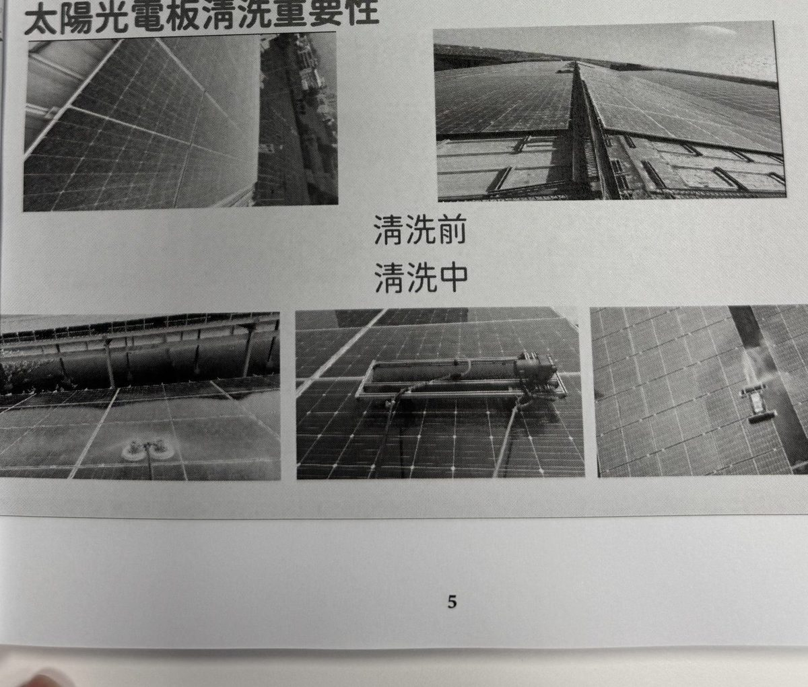
原廠講義：P.08 照度鉗表清洗量測法
ACMEPOINT 6692 ✕ 乙級技術士回訓
頁碼：07 / 20
按 N 鍵呼出講稿 ｜ ← / → 換頁 ｜ F 全螢幕 ｜ G 總覽
MODULE 2 ｜ 熱斑與火災連鎖反應
講義對照 P.09-10 ｜ 錄音 16:16~18:04
鳥糞遮陰引發熱斑與背板破裂連鎖反應：旁路二極體熔斷與直流高溫風險
📌 本章要解決的問題／核心論點
一坨微不足道的鳥糞，為何會演變成高達數百萬元的直流電弧火災？旁路二極體過熱解聯如何催化背板老化？
- 白鷺大糞便完全覆蓋單片電池：白鷺等大型鳥類排泄物足以覆蓋整片 6 吋晶片；被遮蔽電池片轉為純負載消耗電能，觸發旁路二極體持續強行導通。
- 二極體過熱熔斷解聯，永久損耗 1/3：長期過熱導致二極體開路熔斷；單片模組對應的 1/3 電壓與 1/3 額定功率徹底消失，紅外線熱成像溫升達 2~7°C。
- 集中式架構反向電流回灌引爆火災：集中式逆變器多串並聯，故障模組遭反向電流回灌；局部熱點高溫飆破 100°C 撕裂高分子背板，絕緣失效引發直流電弧起火。
鳥糞不是灰塵，而是引爆二極體熔斷、撕裂背板絕緣、誘發千伏直流大火的定時炸彈。
熱斑劣化至直流起火四階段連鎖反應
進金生能源 6692
階段 1：局部遮蔽 ➔ 啟動旁路
白鷺糞便遮蔽單晶片，產生 0.6V 反向電壓導通旁路二極體，分流發熱。
白鷺糞便遮蔽單晶片，產生 0.6V 反向電壓導通旁路二極體，分流發熱。
階段 2：持續導通 ➔ 二極體燒毀
旁路二極體結溫過熱熔斷解聯，模組永久喪失 1/3 電壓與發電功率。
旁路二極體結溫過熱熔斷解聯，模組永久喪失 1/3 電壓與發電功率。
階段 3：反向回灌 ➔ 背板破裂
多串並聯反向電流持續灌入短路點，熱斑溫度 >100°C，高分子背板脆化裂開。
多串並聯反向電流持續灌入短路點，熱斑溫度 >100°C，高分子背板脆化裂開。
階段 4：絕緣跳接 ➔ 直流火災
裂痕若在模組中央無法經邊框接地導走，高壓對金屬支架放電形成致命電弧大火。
裂痕若在模組中央無法經邊框接地導走，高壓對金屬支架放電形成致命電弧大火。
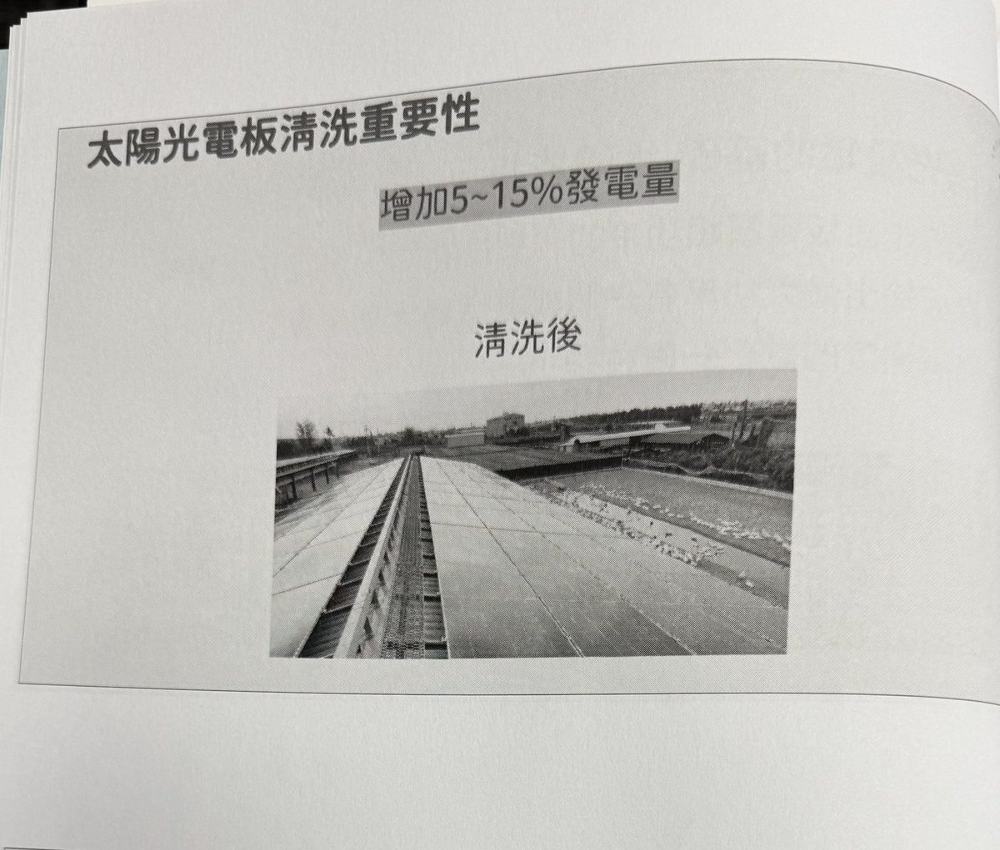
原廠講義：P.09 旁路二極體熱斑機制
ACMEPOINT 6692 ✕ 乙級技術士回訓
頁碼：08 / 20
按 N 鍵呼出講稿 ｜ ← / → 換頁 ｜ F 全螢幕 ｜ G 總覽
MODULE 3 ｜ 逆變器架構與保護機制
講義對照 P.12-14 ｜ 錄音 23:01~29:03
變流器三大主流類型辨析：併網型、獨立型與多向儲能型 (PCS) 應用場景
📌 本章要解決的問題／核心論點
三大變流器類型在抗孤島保護、微電網配置與電力調控上有何本質差異？台電為何強制要求「倒數 300 秒」？
- 併網型（Grid-tied）反孤島與 300 秒鐵律：全時監測電網三相電壓與頻率；電網異常即刻跳脫，復電後嚴格倒數 300 秒確認金屬殘餘電荷釋放完畢方重新送電，杜絕逆電擊斃檢修工。
- 獨立型（Off-grid）無偵測限制：無法辨識電網狀態，台電全島跳電仍持續送電；僅限高山、偏遠無公用電網之微電網，必須搭配鉛酸/鋰/鈉蓄電池。
- 多向儲能型（Hybrid PCS）：支援 DC/AC 與 AC/DC 雙向調控；表後 20kWh 以下家用儲能無繁瑣法規，但切換迴路必須配置具備電磁感應跳脫之 ATS 自動切換開關。
併網型護電網保人命（倒數 300 秒），儲能型管削峰填谷，選型嚴禁跨界混裝。
逆變器單相開機狀態機與 300s 倒數流向
進金生能源 6692
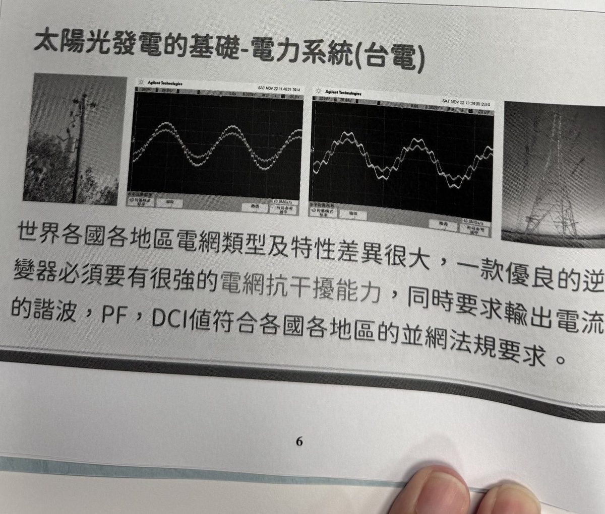
原廠講義：P.10 單相機啟動與 300 秒
ACMEPOINT 6692 ✕ 乙級技術士回訓
頁碼：09 / 20
按 N 鍵呼出講稿 ｜ ← / → 換頁 ｜ F 全螢幕 ｜ G 總覽
MODULE 3 ｜ 變流器超配與衰退真相
講義對照 P.11, 15 ｜ 錄音 29:03~34:36
變流器超配利弊與衰退真相：1.5 倍超配的壽命代價與窄寬 MPPT 選型
📌 本章要解決的問題／核心論點
直流/交流超配到 1.5 倍（如 5kW 變流器接 7.5kW 板子）到底划不划算？設備廠商永遠不會公佈的壽命衰退真相是什麼？
- 超配 1.5 倍之帳面利益與物理代價：以 EPC 建置方而言，100 台變流器可少裝 15 台；早晚梯形發電面積拉寬，但中午日照尖峰被迫降載截斷，且內部 IGBT 長年處於極限高工作溫度。
- 原廠絕口不提的效率衰退曲線：太陽能板有 25 年線性衰退保固（0.5%/年），但變流器完全沒有！超配加散熱不良，5 年後轉換效率可能從 99% 降至 97%，10 年後恐跌破 90%。
- 窄追蹤電壓 (600~800V) 壽命更長：寬電壓追蹤雖能在低照度抓取微光，但內部高頻開關切換頻率極高易疲勞受損；窄電壓選型切換少、壽命長，但串聯電壓設計需留足老化餘裕。
超配是『拿變流器折舊壽命換取前期 EPC 帳面省錢』；散熱不良將吞噬後續 10 年發電收益。
超配發電曲線削峰與衰退趨勢對比
進金生能源 6692
超配 1.5 倍 (DC 7.5kW / AC 5kW)
晨昏梯形變寬 ✕ 正午降載截斷
| 運轉年限 | 標準配置 (1:1.1) | 極限超配 (1:1.5) |
|---|---|---|
| 出廠初期 | 98.5% ~ 99.0% | 98.5% ~ 99.0% |
| 5 年運轉 | 98.0% | 96.5% ~ 97.0% |
| 10 年運轉 | 96.0% | < 90.0% (高故障率) |
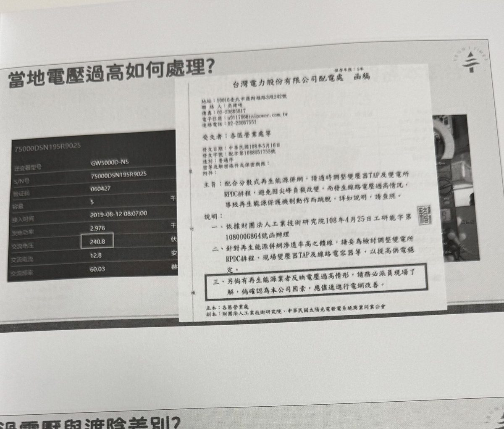
原廠講義：P.11 超配比與 MPPT 範圍
ACMEPOINT 6692 ✕ 乙級技術士回訓
頁碼：10 / 20
按 N 鍵呼出講稿 ｜ ← / → 換頁 ｜ F 全螢幕 ｜ G 總覽
MODULE 3 ｜ 電網干擾與台電公文應對
講義對照 P.06-07 ｜ 錄音 18:04~21:51
台電併網電網抗干擾與高電壓發函處置：台電函稿第 1088051755 號應對
📌 本章要解決的問題／核心論點
當現場變流器實測交流電壓高達 240V~300V、發電曲線被「平頭截斷」時，如何依法援引法規公文要求台電處理？
- 變流器電網抗干擾耐受範圍：工業級變流器允許頻率 $60\text{ Hz} \pm 5\text{ Hz}$、三相電壓 $0.8\sim 1.3$ 倍（220V 容許最高飆至 286V）；但劇烈跳動仍會觸發保護降載。
- 高電壓削平發電曲線非設備故障：現場以電表量測 L1-L2 或各相對地電壓高達 240V 以上時，逆變器強制自保降載，發電量暴跌至 10%（呈現方波平頂）。
- 依法發函台電區處調降變壓器 TAP：依《台電配電處函稿第 1088051755 號》，要求台電派員到場調降變壓器 TAP 抽頭及調節線路電容器 RPDC 排程，杜絕跳脫。
發電平頭截斷非設備之罪，實測電壓超標即刻備齊佐證，依台電函稿發文調降變壓器 TAP。
台電配電處函稿要點與高電壓平頭曲線
進金生能源 6692
📜 台灣電力公司配電處函稿（發文字號：配字第 1088051755 號）
主旨：配合分散式再生能源併網，請適時調整變壓器 TAP 及變電所 RPDC 排程，避免因尖峰負載改變發生線路電壓過高導致再生能源保護動作跳脫。
說明三：另倘有再生能源業者反映電壓過高情形，請務必派員現場了解，倘確認為本公司因素，應儘速進行電網改善。
說明三：另倘有再生能源業者反映電壓過高情形，請務必派員現場了解，倘確認為本公司因素，應儘速進行電網改善。
金門/離島獨立微電網特殊保護差異：
• 台灣本島低電壓 80%：要求變流器 0.2 秒內跳脫。
• 金門獨立微電網：放寬至 1.0 秒內跳脫（避免微電網頻率波動導致光電集體跳脫崩潰）。
• 台灣本島低電壓 80%：要求變流器 0.2 秒內跳脫。
• 金門獨立微電網：放寬至 1.0 秒內跳脫（避免微電網頻率波動導致光電集體跳脫崩潰）。
原廠講義：P.06 台電公文與處理SOP
ACMEPOINT 6692 ✕ 乙級技術士回訓
頁碼：11 / 20
按 N 鍵呼出講稿 ｜ ← / → 換頁 ｜ F 全螢幕 ｜ G 總覽
MODULE 3 ｜ 台電併網三相平衡配算
講義對照 P.15-16 ｜ 錄音 46:42~47:24
台電再生能源併聯三相平衡要點：單相 <20kVA 與相差 <5kVA 工程配算
📌 本章要解決的問題／核心論點
多台單相變流器併入三相配電系統時，如何精準配比避免三相不平衡？台電竣工審查的兩大硬指標為何？
- 低壓單相配電系統容量上限 20kVA：依台電併聯要點第五條，單相系統裝置容量不得超過 20,000 伏安 (20kVA)，防範單相回流過大沖垮配電變壓器。
- 低壓三相系統各相關容量差 ≤ 5kVA：三相配電系統中，任意兩相間之裝置容量差最大不得超過 5,000 伏安 (5kVA)，確保三相對稱供電。
- 三相三線 220V 矩陣平衡配算實務：單相變流器依序輪流分配至 L1-L2 (R-S)、L1-L3 (R-T)、L2-L3 (S-T)；若相差超過 5kW，中性點偏移將導致系統保護連鎖跳脫。
單相嚴守 20kVA、相差嚴控 5kVA；矩陣排程平衡配算方能通過台電竣工驗收。
三相三線 (220Vac) 9 台單相機平衡配算表
進金生能源 6692
| 相別 \ INV | #1 | #2 | #3 | #4 | #5 | #6 | #7 | #8 | #9 | 總和 |
|---|---|---|---|---|---|---|---|---|---|---|
| L1-L2 (R-S) | 4.6 | - | - | 4.6 | - | - | 4.6 | - | - | 13.8 kW |
| L1-L3 (R-T) | - | 4.6 | - | - | 4.6 | - | - | 4.6 | - | 13.8 kW |
| L2-L3 (S-T) | - | - | 4.6 | - | - | 4.6 | - | - | 4.6 | 13.8 kW |
✔ 驗算結果：各相總和均為 13.8 kW，最大容量差 $\Delta P = 0\text{ kW} < 5\text{ kW}$，完全符合台電規範！
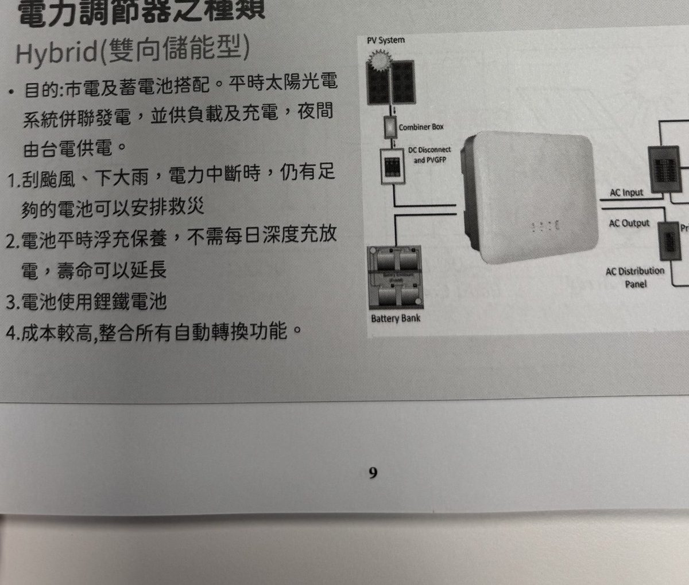
原廠講義：P.16 三相三線平衡配比
ACMEPOINT 6692 ✕ 乙級技術士回訓
頁碼：12 / 20
按 N 鍵呼出講稿 ｜ ← / → 換頁 ｜ F 全螢幕 ｜ G 總覽
MODULE 4 ｜ 案場巡檢與施工工藝
講義對照 P.17-19 ｜ 錄音 47:24~49:34
變流器安裝與散熱工法：遮陽板防護、人體工學高度與風道空間配置
📌 本章要解決的問題／核心論點
變流器直接掛在戶外無遮蔽暴曬會帶來哪些隱形老化？散熱風道與安裝高度該如何規範？
- 遮陽板是高分子接頭的護盾：變流器下方的直流連接器、密封防水圈與交流電纜均為高分子聚合物，日光直射紫外線加速脆化龜裂，雨水滲入極易短路起火。
- 優先安裝於板下陰影或室內：嚴禁將變流器無遮蔽裸露於戶外；遮陽板可有效降低機殼工作溫度 5~10°C，顯著延緩內部電容老化並提升發電效率。
- 人體工學安裝高度與風道間隙：嚴禁安裝太低（維運工程師蹲下檢修膝蓋發麻站不起身）或太高（需登高攀爬）；風扇排風口禁止貼牆或兩機緊貼，防止熱島效應。
遮陽板降溫抗老化，人體工學高度保關節；散熱風道暢通方能確保變流器 20 年平穩運轉。
變流器戶外標準安裝工法剖面圖
進金生能源 6692
【變流器戶外安裝四項鐵律】
① 防曬遮陽板：頂部加裝傾斜金屬遮陽罩，阻擋正午與西曬紫外線。
② 作業高度：機體下緣距地面或檢修踏板保持 80 ~ 120 cm，便於開箱巡檢。
③ 風道間隙：頂部排風空間 > 50 cm，左右側邊間距 > 30 cm，禁止熱風迴流。
④ 線纜滴水彎：底部進線電纜必須預留 U 型滴水彎，防止雨水沿線纜倒灌接頭。
② 作業高度：機體下緣距地面或檢修踏板保持 80 ~ 120 cm，便於開箱巡檢。
③ 風道間隙：頂部排風空間 > 50 cm，左右側邊間距 > 30 cm，禁止熱風迴流。
④ 線纜滴水彎：底部進線電纜必須預留 U 型滴水彎，防止雨水沿線纜倒灌接頭。
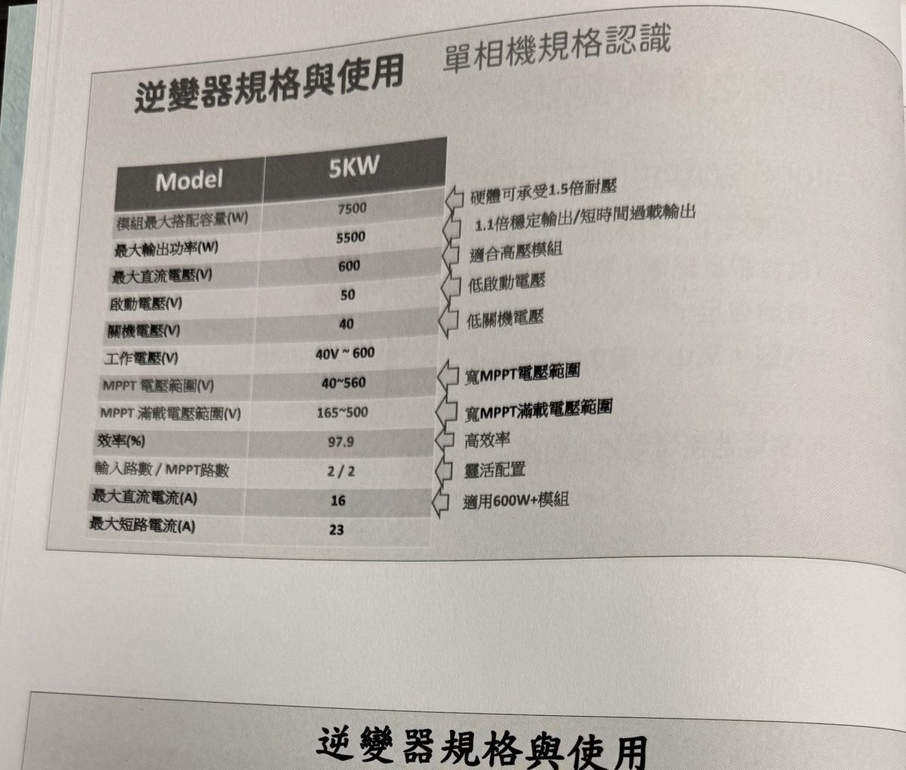
原廠講義：P.17 遮陽板與安裝工法
ACMEPOINT 6692 ✕ 乙級技術士回訓
頁碼：13 / 20
按 N 鍵呼出講稿 ｜ ← / → 換頁 ｜ F 全螢幕 ｜ G 總覽
MODULE 4 ｜ 施工工藝與接頭防護
講義對照 P.20-22 ｜ 錄音 50:08~51:40
現場施工工藝規範：嚴禁砂輪機切線、20kg 扭力扳手與 MC4 端子防燒燬
📌 本章要解決的問題／核心論點
工班在現場圖一時方便的施工壞習慣，如何埋下日後電廠起火的毀滅性隱患？MC4 端子為何頻繁燒焦？
- 嚴禁使用手提砂輪機/線鋸切線：高速切割飛濺的細微金屬碎屑吸附於變流器內部 PCB 板，遇潮即引發短路炸機；必須使用 22/38/60mm² 專用電纜剪。
- 螺絲鎖緊嚴格執行 20kg 扭力：禁止使用無扭力調節之衝擊起子；依對角順序每次鬆開/鎖緊 1/4 圈逐步到位，防止外殼滑牙變形與防水膠條受力不均。
- MC4 連接器燒燬四大死因剖析：① 未用原廠專用壓接鉗；② 異廠牌端子公差混接產生高接觸電阻；③ 異種金屬電位差氧化腐蝕；④ 浮插未鎖緊致水氣進入。
專用電纜剪防鐵屑短路，20kg 扭力防漏水滑牙，原廠專用 MC4 杜絕千度直流電弧熔燬。
合格施工工藝 vs 致命違規對比
進金生能源 6692
🚫 嚴禁違規作業（立即勒令停工）
• 使用砂輪機切割電纜（金屬粉塵飄散短路）
• 無扭力電動起子直接打死鎖緊（螺紋破壞滑牙）
• 不同廠牌 MC4 端子硬插對接（接觸阻抗飆升熔毀）
• 無扭力電動起子直接打死鎖緊（螺紋破壞滑牙）
• 不同廠牌 MC4 端子硬插對接（接觸阻抗飆升熔毀）
✔ 標準合格工藝（品質保證）
• 採用 22/38/60mm² 標準棘輪電纜剪切齊
• 扭力扳手整定 20kg，對角循序施扭
• 原廠專用壓接鉗，同品牌端子並騰空固定
• 扭力扳手整定 20kg，對角循序施扭
• 原廠專用壓接鉗，同品牌端子並騰空固定
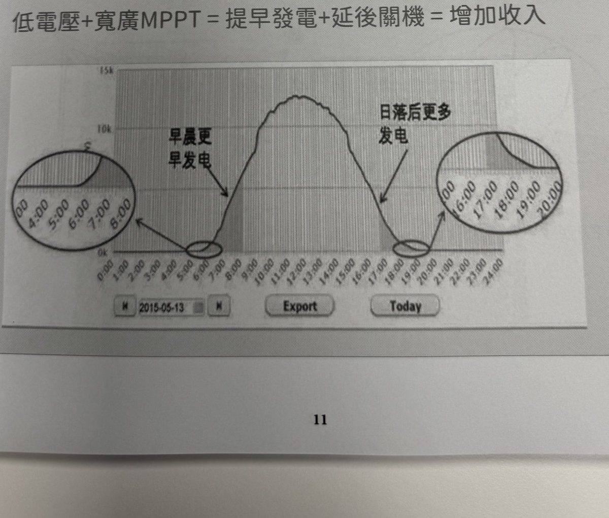
原廠講義：P.20 電纜剪與扭力規範
ACMEPOINT 6692 ✕ 乙級技術士回訓
頁碼：14 / 20
按 N 鍵呼出講稿 ｜ ← / → 換頁 ｜ F 全螢幕 ｜ G 總覽
MODULE 4 ｜ 巡檢工安死角防禦
講義對照 P.23-25 ｜ 錄音 51:42~55:22
巡檢工安致命陷阱：組串負極對地 -199V 帶電量測與安全斷開流程
📌 本章要解決的問題／核心論點
為何前線維運工程師常在更換保險絲或量測組串時發生觸電意外？單斷正極為何無法消除觸電風險？
- 實測單斷正極負極對地高達 -199V：前線常誤認斷開正極即無回路；現場三用電表實測證實，單斷開正極時，負極對地存在高達 -199V 致命電壓！徒手觸碰瞬間觸電。
- 正負極雙斷驗電歸零準則：唯有將組串正極與負極兩端開關同步斷開，實測正對地 (6.16V ➔ 0V) 與負對地 (-7.63V ➔ 0V) 均降至安全電壓，方可徒手碰觸。
- 組串開路電壓量測六步驟防弧 SOP：切開開關 ➔ 拉開保險絲 ➔ 重新閉合開關量測電壓 ➔ 再次切開開關 ➔ 裝回保險絲 ➔ 重新投切，防範帶載拉弧觸電。
單斷正極『負極仍帶 -199V 致命高壓』；檢測維護必遵雙斷正負極、驗電歸零再施作。
實測電壓與組串負極斷開驗電步驟
進金生能源 6692
⚡ 現場實測致命數據（講義 P.25 實錄）
• 步驟四 (單斷開正極)：負極 V.S. 地 = -199 V (極危險！)
• 步驟五 (斷開正/負極)：正極 V.S. 地 = 6.16 V (安全殘電)
• 步驟六 (斷開正/負極)：負極 V.S. 地 = -7.63 V (安全殘電)
• 步驟五 (斷開正/負極)：正極 V.S. 地 = 6.16 V (安全殘電)
• 步驟六 (斷開正/負極)：負極 V.S. 地 = -7.63 V (安全殘電)
🛡️ 防弧金律：更換直流熔絲保險絲時，切忌在開關閉合（帶載）狀態下拔插，否則高壓直流電弧將瞬間在拔出瞬間起火灼傷雙手！
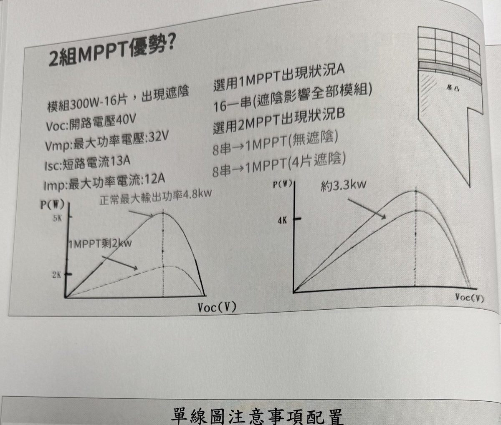
原廠講義：P.25 負極帶電 -199V 實測
ACMEPOINT 6692 ✕ 乙級技術士回訓
頁碼：15 / 20
按 N 鍵呼出講稿 ｜ ← / → 換頁 ｜ F 全螢幕 ｜ G 總覽
MODULE 5 ｜ 消防安全與 RSD 快速關斷
講義對照 P.25-26 ｜ 錄音 55:27~57:35
消防救災防觸電神盾：快速關斷裝置 (RSD) 與 80V/30V 規範解析
📌 本章要解決的問題／核心論點
屋頂光電發生火災時，消防人員為何不敢輕易射水灌救？快速關斷裝置（RSD）的核心技術指標是什麼？
- 日光照射下模組持續產出千伏高壓：即使切斷電網交流總開關，屋頂組串在白晝日光下仍維持 600V~1000V 直流高壓；消防射水時水柱導電（人體危險閾值僅 30~50V）易生觸電殉職。
- 美國 NEC 690.12 RSD 80V/30V 標準：緊急關斷啟動後 30 秒內，光伏方陣界限內部回路電壓必須降至 80V 以下；方陣界限 30cm (1呎) 以外電壓必須降至 30V 以下。
- RSD 是保命工具而非發電提升器：以每 1~2 片模組為最小斷開單元；RSD 目的不是提升發電量或防熱斑，而是火災搶救時為消防人員切斷致命高壓通道。
RSD 是光伏系統的『消防救生氣囊』；30 秒內將千伏高壓降至 80V 以下，守護救災生命安全。
NEC 690.12 快速關斷 80V/30V 界限示意圖
進金生能源 6692
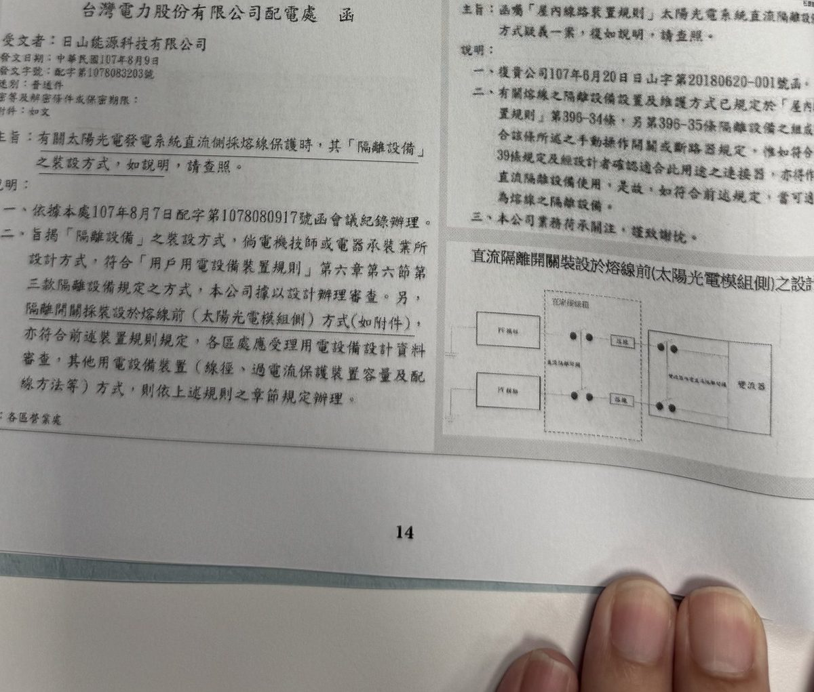
原廠講義：P.26 RSD 快速關斷原理
ACMEPOINT 6692 ✕ 乙級技術士回訓
頁碼：16 / 20
按 N 鍵呼出講稿 ｜ ← / → 換頁 ｜ F 全螢幕 ｜ G 總覽
MODULE 5 ｜ 電弧防護與防逆送裝置
講義對照 P.27-28 ｜ 錄音 57:35~59:43
AFCI 電弧故障斷路與防逆送裝置 (Zero Export) 運作原理
📌 本章要解決的問題／核心論點
直流高頻電弧為何能神不知鬼不覺點燃案場？自發自用案場如何透過雙 CT 實時防止電力逆送電網？
- 直流電弧無過零點、溫度飆破 3000°C：不同於交流電每秒 120 次過零點自熄，直流電弧一旦產生即持續燃燒；AFCI 透過高頻 FFT 頻譜分析，在電弧起火前 2.5 秒內強制關閉變流器。
- 防逆送裝置（Zero Export）運作邏輯：自發自用系統若倒灌電網，觸犯法規且危及檢修人員；防逆送裝置在輸出端配置 2 個比流器 (CT) 實時偵測電流相位。
- 防逆送是偵測元件而非單純開關：CT 僅監測電流方向；一旦偵測到電流朝台電側逆送，立即透過通訊向變流器發出降載指令，將輸出功率動態壓制在負載之下。
AFCI 聽聲辨位熄滅 3000°C 電弧，雙 CT 毫秒動態調控防逆送，守護電氣與合規底線。
AFCI 電弧防護與雙 CT 防逆送控制架構
進金生能源 6692
🔥 AFCI (Arc Fault Circuit Interrupter)
串聯在直流回路中 ➔ 即時監聽 40kHz~100kHz 高頻電弧雜訊 ➔ < 2.5 秒瞬時切斷變流器輸出 ➔ 撲滅 3000°C 燃燒源
🔄 防逆送裝置 (Zero Export Controller)
輸出總線配置 2 顆 CT ➔ 判別電流向量方向 ➔ 若向量為「逆送至台電」➔ 反饋控制變流器瞬態降載 ➔ 嚴控逆送功率為零
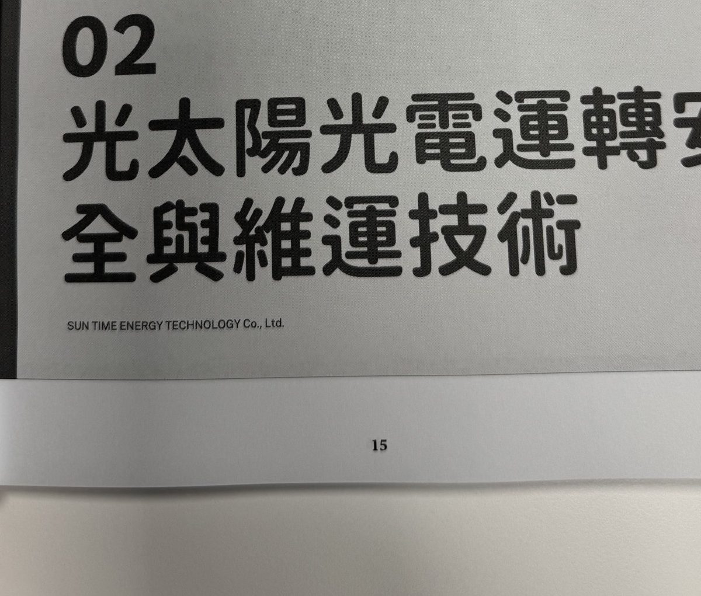
原廠講義：P.28 防逆送與 CT 偵測
ACMEPOINT 6692 ✕ 乙級技術士回訓
頁碼：17 / 20
按 N 鍵呼出講稿 ｜ ← / → 換頁 ｜ F 全螢幕 ｜ G 總覽
MODULE 5 ｜ 陽台光伏與儲能模式
講義對照 P.29-33 ｜ 錄音 1:00:00~1:02:40
分散式陽台光伏 (BIPV) 避坑指南與表後儲能四大模式
📌 本章要解決的問題／核心論點
陽台光伏「隨插即用」有何致命火災與觸電風險？表後儲能系統如何配置四大模式實現效益最大化？
- 方位發電衰退驚人（北向僅剩 33%）：模擬實測，面北陽台發電量僅為面南傾角 6 度的 33%（東向/西向約 50%）；未評估方位盲目安裝恐蝕本。
- 嚴禁直接插入家用普通插座：微逆變器插頭金屬裸露極易觸電；且直插普通插座缺乏漏電與穩壓保護，易使家用電器燒毀甚至釀成室內火災，必須設置專用迴路。
- 表後儲能四大運轉模式實戰：自用模式（光伏/電池優先供負載）、備用模式（UPS 應急供電）、經濟模式（離峰充電尖峰放電套利）、延時充電模式。
陽台光電拒絕隨便插插座，表後儲能精算時間電價；安全合法方能真正省下電費。
陽台光電發電衰退與儲能四大模式對照
進金生能源 6692
🧭 陽台方位發電效率對比 (基準：面南 6° 傾角)
南向：100%
東/西向：~50%
北向：僅 33%
🔋 表後儲能四大模式簡介 (講義 P.33)
• 自用模式 (預設)：白天光電優先給負載與電池，多餘送電網，夜晚放電。
• 備用模式：保持電池滿電，市電斷電瞬間以 UPS 接管重要負載。
• 經濟模式：設定離峰時段市電充飽，尖峰時段全力放電套利。
• 備用模式：保持電池滿電，市電斷電瞬間以 UPS 接管重要負載。
• 經濟模式：設定離峰時段市電充飽，尖峰時段全力放電套利。
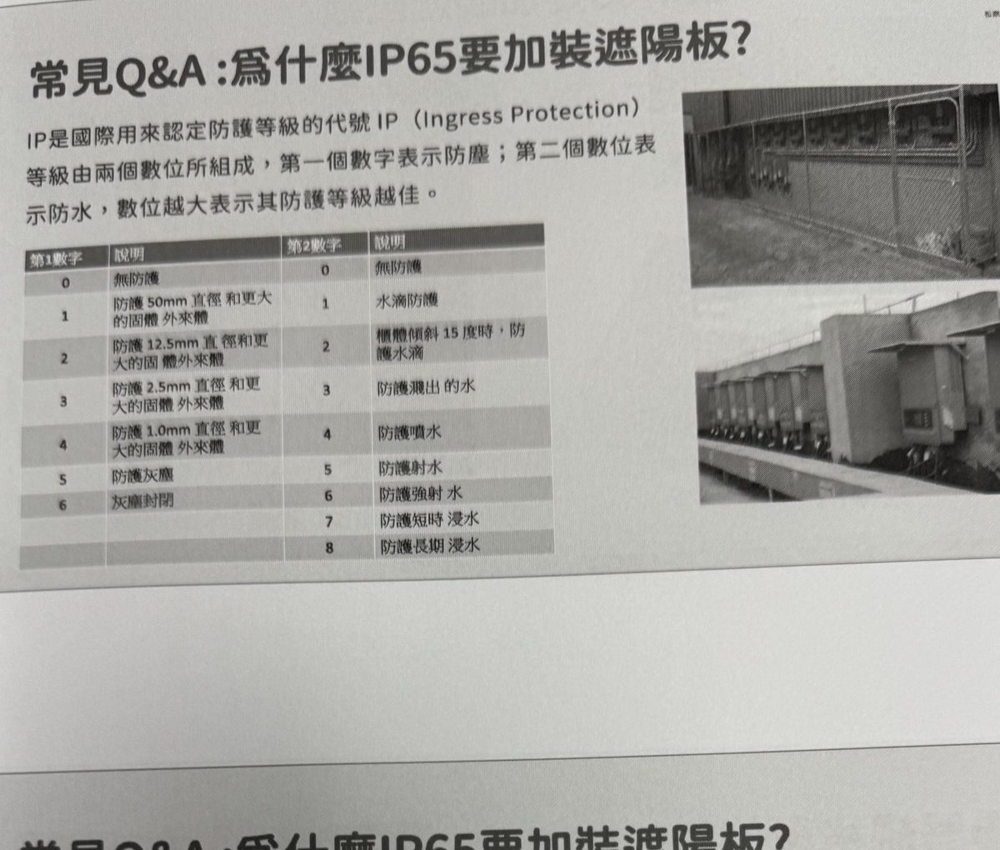
原廠講義：P.33 儲能機模式與負載
ACMEPOINT 6692 ✕ 乙級技術士回訓
頁碼：18 / 20
按 N 鍵呼出講稿 ｜ ← / → 換頁 ｜ F 全螢幕 ｜ G 總覽
SUMMARY ｜ 課程總結與行動結論
全課程精華歸納 ｜ 葉大衛分享總結
課程總結：光伏維運專業工程師十條軍規 (10 Golden Rules)
📌 本章要解決的問題／核心論點
如何將全鏈路理論轉化為第一線工程師走入案場時的肌肉記憶？嚴守十條軍規，杜絕發電損失與重大安全工安事件。
- 1. 備品配足 2%：模組 5 年即停產，建置期必留 1%~2% 同批專屬備品。
- 2. 電流匹配 1A：替換故障模組嚴格匹配電流差在 1A 內，防大電流加熱。
- 3. 照度實測修正：切忌盲信 PR 值，共平面鉗表修正跌破 30% 始清洗。
- 4. 鳥糞即刻清除：防二極體持續導通熔斷，杜絕背板 100°C 龜裂火災。
- 5. 變流器加遮陽：金屬罩防紫外線脆化接頭，降低溫升 5~10°C。
十條軍規落地生根，是進金生能源在太陽光電領域持續領先的工程品質底座。
後五條電氣法規與工安防線
進金生能源 6692
6. 高電壓依法發函：實測電壓高平頭截斷，依台電函稿 1088051755 發文調 TAP。
7. 三相嚴控 5kVA：單相不破 20kVA，相差嚴控 5kVA 內防中性點偏移。
8. 嚴禁用砂輪切線：專用電纜剪防鐵屑短路，螺絲對角 20kg 扭力到位。
9. 負極帶電 -199V：單斷正極非安全，正負雙斷、驗電歸零始碰觸。
10. 消防配齊 RSD：30 秒內降至 80V 救命，陽台光電必拉專用迴路。
原廠講義：P.25 負極工安量測
ACMEPOINT 6692 ✕ 乙級技術士回訓
頁碼：19 / 20
按 N 鍵呼出講稿 ｜ ← / → 換頁 ｜ F 全螢幕 ｜ G 總覽
APPENDIX ｜ 附錄與原廠講義圖冊
33 頁 66 張講義對照庫
附錄：原廠技術手冊 66 張精華投影片索引與對照庫
📌 本章要解決的問題／核心論點
本簡報各頁結論與數據嚴格基於 20261027 乙級技術士回訓實體教材，杜絕外部無端推測與 AI 幻覺。點擊右側縮圖即可查看原始高解析講義。
- 嚴格對齊原廠教材：收錄 P.01 課程大綱、P.03 光熱電對比、P.04 PN 接面光電原理、P.06 台電公文正本。
- 關鍵工藝圖紙：包含 P.10 逆變器啟動 300 秒狀態機、P.16 三相三線平衡配比表、P.20 20kg 扭力螺絲順序。
- 安全法規圖譜：完整保留 P.25 負極 -199V 實測照片、P.26 RSD 消防關斷架構與 P.33 儲能機自用模式圖。
原圖高清對照，隨時查證原廠工程依據與台電最新函令。
精華講義原圖展示（點擊任意卡片放大檢視）
進金生能源 6692
原廠講義：P.01 課程大綱
ACMEPOINT 6692 ✕ 乙級技術士回訓
頁碼：20 / 20
按 N 鍵呼出講稿 ｜ ← / → 換頁 ｜ F 全螢幕 ｜ G 總覽